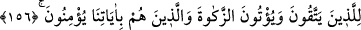

“Onunla” yani bu imtihan sebebiyle dalâlete düşmesini “dilediğini sapıtırsın” onlar
da hadleri aşarak hakları olmayan şeyi isterler. Hakk’a ulaştırmayı “dilediğine de
doğru yolu gösterirsin.” onlar da bu ve benzeri durumlarda sarsılmazlar, bilakis
imanları güçlenir. “Sen bizim velîmizsin” yani dünyevî ve uhrevî bütün işlerimizi
düzenleyen ve devam ettiren, bize yardım edip bizi koruyan yalnız sensin, başkası değil.
İşlediğimiz günahlardan dolayı “bizi bağışla.” Dünyevî ve uhrevî rahmet eserlerini
üzerimize dökerek “bize acı.”
Şeyhzâde der ki: “Mağfiret” (bağışlama), cezanın kaldırılması, rahmet ise iyiliğin
ulaştırılmasıdır. Ayette önce mağfiret, sonra rahmet getirilmiştir. Çünkü def-i mazarrat,
celb-i menfaatten öncedir.
“Sen bağışlayanların en iyisisin.” Günahı bağışlar ve onları iyiliklere çevirirsin.
Başkaları da suçları affederler. Ama onlar, güzel bir övgüye nail olmak ya büyük bir
karşılık elde etmek ya da kalplerinden kasveti uzaklaştırmak için böyle yaparlar. Sen ise
kullarının günahlarını, herhangi bir gaye ve karşılık için değil, sırf katından bir lütuf ve
ihsan olarak bağışlarsın. Bu yüzden Senin bağışlayanların en iyisi ve merhametlilerin en
merhametlisi olduğunda şüphe yoktur.”
Burada özellikle “mağfiret” ifadesinin kullanılması, makama uygun gelmesi
sebebiyledir.
156. Bize, bu dünyada da iyilik yaz ahirette de. Şüphesiz biz sana döndük.” Allah
buyurdu ki: Kimi dilersem onu azabıma uğratırım; rahmetim ise her şeyi kuşatır.
Onu, sakınanlara, zekâtı verenlere ve ayetlerimize inananlara yazacağım.
“Bize bu dünyada da iyilik yaz,” maişetimizi güzel yap ve bizleri taatına muvaffak
kıl. “ahirette de.” bize iyilik yaz; bize güzel bir mükâfât ver veya bizi cennettine koy.
“Yaz”, sâbit kıl ve tâyin et, demektir.
“Biz sana yöneldik.” Bu cümle, Mûsâ (a.s.)’ın bağışlanma ve merhamet dilemesinin
gerekçesidir. Yani sana özür dilemek için geldiğimiz büyük günahtan ve burada vâkî
olan seni görme talebinden tevbe edip sana döndük. Tevbe edenlerin tevbesini kabul
etmemek, senin lütfundan ve fazlından uzaktır.
Denilmiştir ki: Tûr dağındaki yetmiş kişiyi sarsıntı alıp hepsi birden ölünce Mûsâ
(a.s.) Allah’a yalvarmış ve Allah onları tekrar diriltmiştir. Bu konu, Bakara suresinde
geçmişti.
Mûsâ (a.s.)’ın bu duasına karşılık olarak Allah Teâlâ “buyurdu ki: “Azabıma” azab